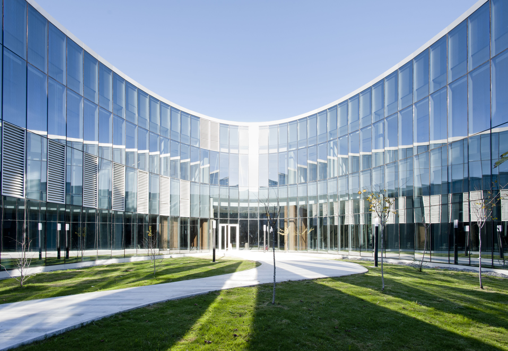
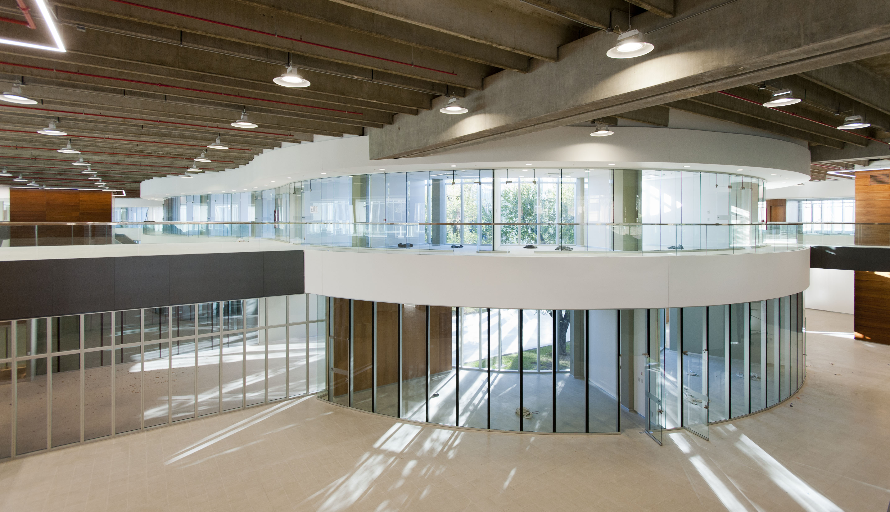
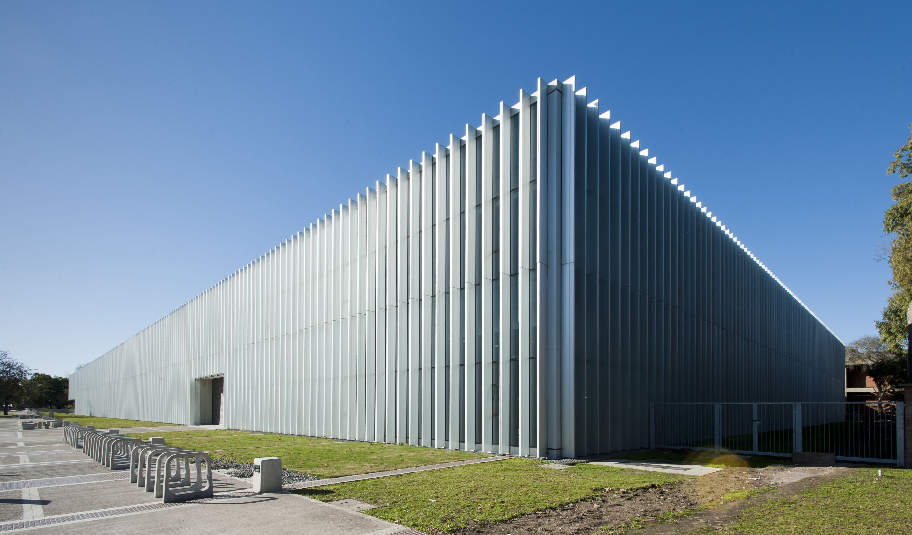
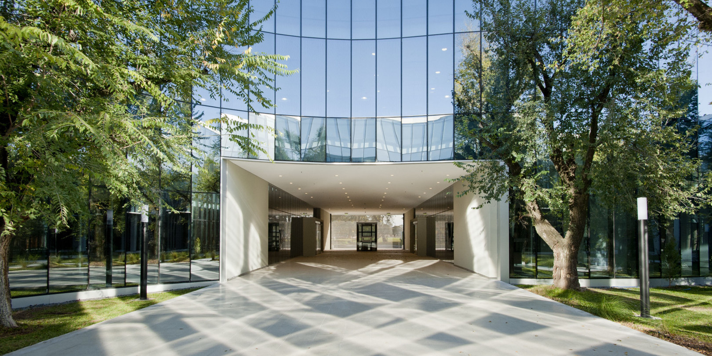

Agenda Informática Nacional
Muchas
comunidades.
Una agenda común.
Un encuentro nacional para debatir qué informática queremos construir en la Argentina.
28 de noviembre · Cero + Infinito
Agenda Informática Nacional
Un encuentro nacional para debatir qué informática queremos construir en la Argentina.
28 de noviembre · Cero + Infinito
01 · El punto de partida
Saberes, experiencias y problemas. Lo que falta es encontrarnos para ponerlos en común.
02 · La pregunta
03 · La propuesta
Un espacio para compartir experiencias y construir colectivamente.
04 · Territorios de debate
05 · Una jornada abierta y diversa
Distintas comunidades. Distintos saberes. Distintas experiencias. Un mismo espacio de encuentro.
06 · Después del debate
07 · El momento de la síntesis
08 · El cierre




09 · El lugar
Cero + Infinito es parte de la experiencia: abierto, conectado, contemporáneo, flexible y colectivo.
28 de noviembre · Cero + Infinito
10 · Lo que queremos que quede
Construida desde quienes trabajan, estudian, investigan, enseñan, desarrollan, organizan y participan de la comunidad informática.
Agenda Informática Nacional
28 de noviembre · Cero + Infinito
Sumate a la conversación · foco@informaticos.ar